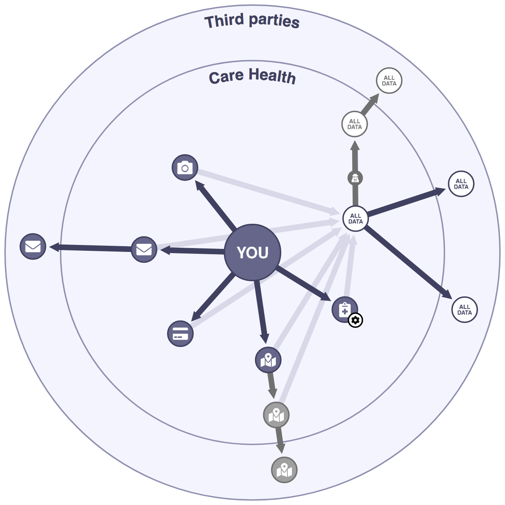
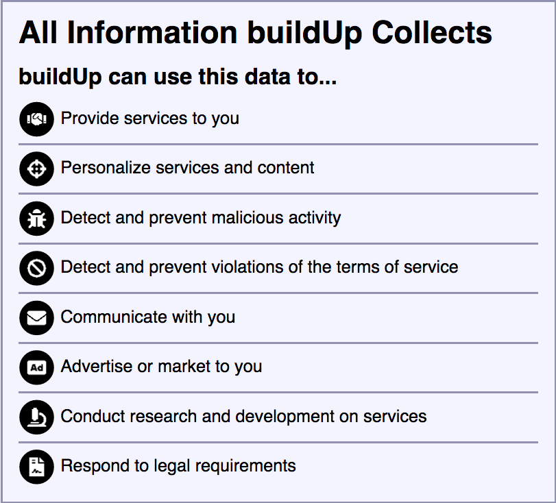
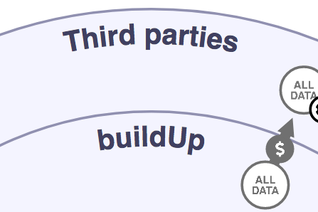

This tutorial uses the privacy policy of a fictional company named Care+. This visualization of the Care+ privacy policy is designed to help you understand how Care+ can collect, use, and share your personal data.
When you use Care+'s app, it will collect different types of data from you. These different types of data are represented in the visualization by small circles.
Hover over a circle with your mouse to select it and learn more about how your data can be shared, changed, or used. Related elements on the screen may also be highlighted. You can click on a circle to keep it selected.
Your data can be shared or changed. This is represented by arrows pointing to new circles representing your data after it has been shared or changed. Sometimes, icons will appear on arrows that indicate special ways of sharing or changing your data, such as selling or anonymizing. You can hover over and click arrows to learn more about the specific action they represent.
There are two rings in the display. The inner ring, labeled "Care+," contains circles representing data that is held by Care+. The outer ring, labeled "Third parties," contains circles representing data that is held by others.
Sometimes, Care+ describes what it can do with all data it collects about you. This is represented by circles with a white background that say "ALL DATA." Hovering over the big central circle should provide a decent overview of how Care+ can use any data it collects about you.
You have control over some of the data Care+ collects. This control is shown by a gear icon on the circles representing data you can control.